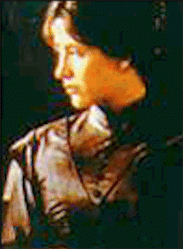

Contents | Features | Reviews | News | Archives | Store |
 |
|
| Movie Credits | Buy It! |
Firelight
Review by Carrie Gorringe
Posted 4 September 1998
|  | Written and Directed by William Nicholson Starring
Sophie Marceau, Stephen Dillane, |
Here is the film for incurable romantics who claim that directors don’t make films the way they used to. The nineteenth-century-based plot, on the face of it, is a first-class heartbreaker: a well-bred young woman named Elisabeth (Marceau) has been obliged to enter into a cold-blooded contract with a wealthy, married landowner named Charles Godwin (Dillane), whose wife cannot bear him a child. In return for the rental of her fecundity, Elisabeth will receive enough money to pay off her father’s debts. During the necessary consummation process, both partners feel more emotional involvement than might be thought proper under the circumstances, but live up to their mutual obligations. Unfortunately, honoring the contract becomes more difficult for Elisabeth than for Godwin: when she hears her baby’s first cries, they are all she will ever know of her daughter, as the baby is whisked away from her with indecent haste. For seven years, she mourns her part in this transaction, and spends much of her time creating scrapbooks filled with drawings and poems dedicated to the unknown child, in the seemingly vain hope that one day she can present them to her baby as proof of her unceasing maternal love.
Then, she is summoned to an estate in Sussex in the role of governess to care for a – you guessed it – seven-year-old girl (Belancourt). The child is an insufferable hellion, seething with resentment and overflowing with insolence because she never sees her father. Reaching her limit of tolerance with the child within a very short time, Elisabeth is resolved to quit the job and the household until she runs into the child’s father (no extra points for putting the right name and face together). Both of them must fight to help the child and resist each other.
Based upon the above synopsis, the average filmgoer, accustomed by now to too many shoot-‘em-ups and gross-out-humor films, might think that Firelight is nothing more than a grotesquely saccharine period-piece. Such an accusation might have merit, if the film were not in the hands of William Nicholson, who may be a first-time director, but whose writing credits are renowned among aficionados of "quality" films (Shadowlands, and Nell among them). Firelight is not some sort of sentimentalist twaddle as concocted by a cynical writer for people to wallow about in as a cheap form of catharsis; Nicholson honestly believes, quite legitimately, that there is something morally and emotionally compelling in the themes of love and honor and the ensuing desperation caused by tensions between these two polar opposites. They are, after all, the most valuable components of human existence and, because of the feelings of vulnerability they inspire, as well as the ease with which they can generate a response, even (and especially) in their most degraded forms, the most belittled. Nicholson has respect for these lovers bound by obligations and blood ties; he obliges them and the audience to explore the consequences of binding love to personal expediency. Love, says Nicholson, has a way of punishing most brutally those who treat it too lightly, and both of our characters, over the course of the film, will come to know that said phrase is not as comfortingly hackneyed as many would like to believe. Simply watching the devastating aftermath of the birth scene in Firelight is sufficient to illustrate the point.
As a result, Firelight is not an easy film to watch (although its cinematography, by Nic Morris, does make the film a treat for the eye, as Morris creates a nineteenth-century world full of wistfully gauzy images that tend to transcend the merely visual and verge upon other-worldly), it is a film that rewards your suffering rather than exacerbating it, despite a bizarrely-contrived ending. Both Marceau (Braveheart) and Dillane (Welcome to Sarajevo) infuse their characters with a strong sense of credibility without making the obviously difficult task appear too laborious. In his directorial capacity, Nicholson even resurrects long-abandoned stylistics (such as the use of montage sequences to convey the passage of time) and does so with an elegant hand, thereby invoking a sense of regret over the passing of a period in film when people could create love stories without always steeping every facet of the production in a gallon of irony. Perhaps Firelight might be the start of a limited, but welcome, trend.
Contents | Features | Reviews | News | Archives | Store
Copyright © 1999 by Nitrate Productions, Inc. All Rights Reserved.